样本数据与可视化程序 Sample Data & Visualisation
大数据分析［2026 国际商务］ · 配合第二章「数据类型」与第三章「数据整备」的样本页 · 2026 秋季学期
Lecture 2 · 数据类型样本（10 个程序，逐行中文注释）
| 课件页 | 数据类型 | 程序（逐行中文注释） | 样本数据 |
|---|---|---|---|
| 第 10 帧 | 数值型数据（连续 / 离散） 800 个交易日的日对数收益率与成交量的直方图、箱线图（离群点），以及每日订单数的离散计数分布。 |
01_datatype_numeric.py | numeric_samples.csv |
| 第 12 帧 | 类别型数据（名义 / 有序） 行业（名义，6 类）与信用评级（有序，AAA–C）的频数条形图，以及行业 × 评级交叉热力图。 |
02_datatype_categorical.py | categorical_samples.csv |
| 第 13 帧 | 结构化 / 半结构化 / 非结构化 定长字段表格、嵌套且字段可缺省的 JSON、无字段的自然语言文本三种形态并排对照。 |
10_datatype_structured_unstructured.py | structured_orders.csv、semistructured_orders.json、unstructured_note.txt |
| 第 15 帧 | 文本数据 20 条财经短讯切词后的 Top-15 词频、逐篇字符数与长度分布（决定截断与填充策略）。 |
03_datatype_text.py | text_samples.csv |
| 第 16 帧 | 图像数据 3 类 × 4 张 32×32 灰度样本马赛克、彩色图像三通道分解与像素强度分布。 |
04_datatype_image.py | image_samples.npy、image_labels.npy |
| 第 17 帧 | 音频数据 8 kHz、1 秒的纯音 / 扫频 / 调幅噪声：时域波形、短时傅里叶频谱图与包络。 |
05_datatype_audio.py | audio_tone_440.wav、audio_chirp_200_2000.wav、audio_am_noise.wav |
| 第 18 帧 | 视频数据 12 帧 48×48 序列（抽帧 PNG 在 data/video_frames/）、帧间差分运动检测与逐帧亮度信号。 |
06_datatype_video.py | video_frames.npy |
| 第 19 帧 | 图 / 网络数据 60 节点 BA 无标度网络的力导向布局（节点大小与颜色表示度数）与度分布双对数图。 |
07_datatype_graph.py | graph_edges.csv、graph_nodes.csv |
| 第 20 帧 | 时空轨迹数据 深圳南山周边 3 条轨迹 × 120 个点：经纬度路径、hexbin 空间密度与速度时间序列。 |
08_datatype_spatiotemporal.py | spatiotemporal_tracks.csv |
| 第 23 帧 | 截面 / 时序 / 面板 截面排序条形图、含 12 期移动平均的 120 个月 CPI、8 家公司 × 10 年的面板小多图。 |
09_datastructure_cross_time_panel.py | structure_cross_section.csv、structure_time_series.csv、structure_panel.csv |
运行方式：pip install -r code/requirements.txt → cd code && python run_all.py；
样本写入 data/，图片写入 figures/。随机种子固定 20260917，每次运行结果完全一致。
Lecture 2 示例图片 Figures
{kind=link}
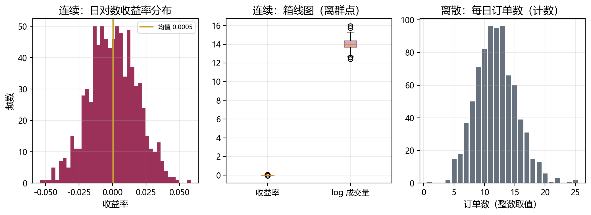
{kind=link}
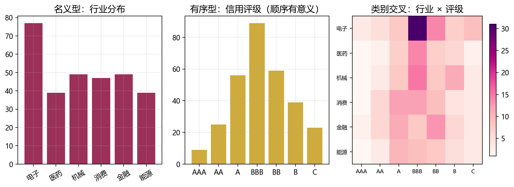
{kind=link}
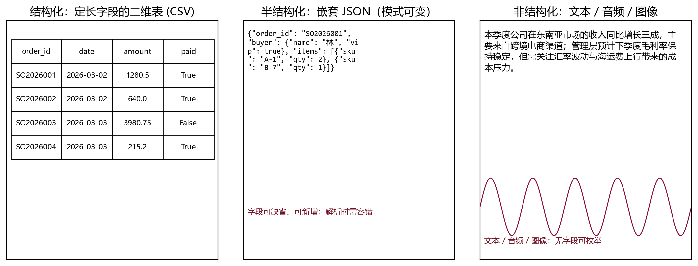
{kind=link}
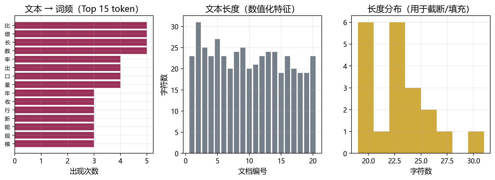
{kind=link}
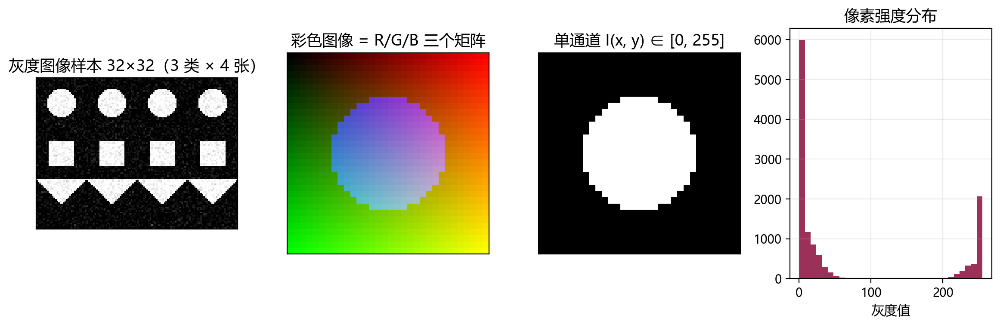
{kind=link}
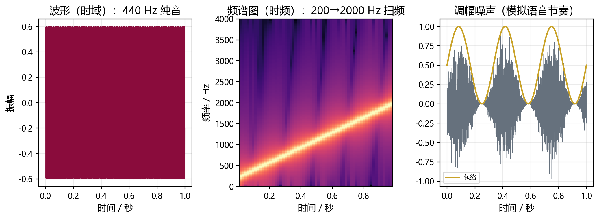
{kind=link}
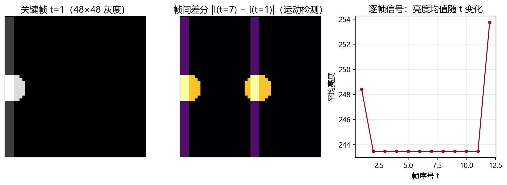
{kind=link}
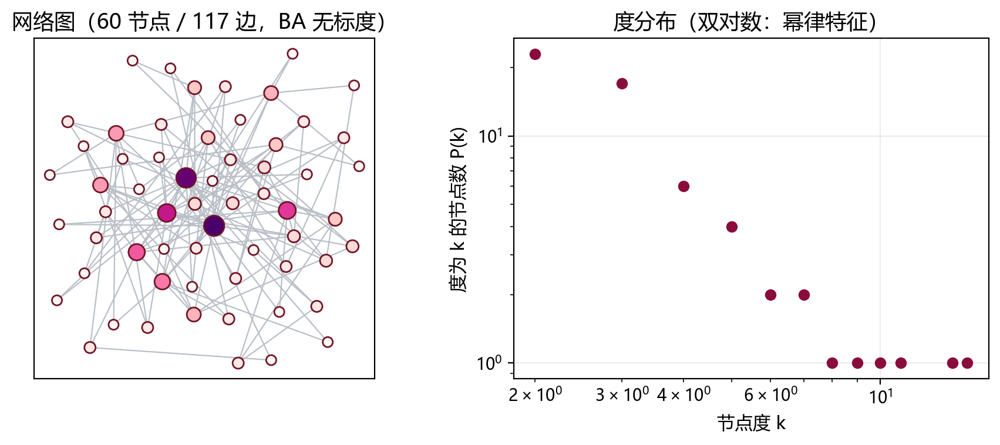
{kind=link}
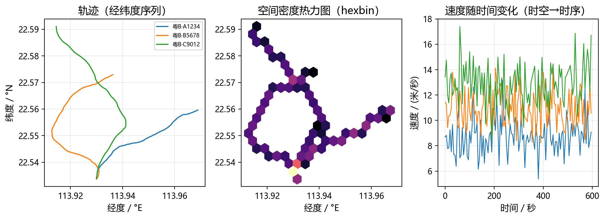
{kind=link}
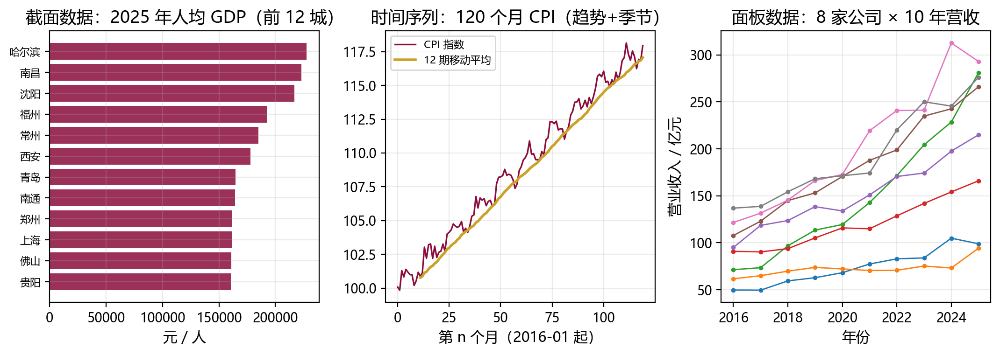
Lecture 3 · 数据整备样本（10 个程序，逐行中文注释）
运行方式：pip install -r code/lecture03/requirements.txt → cd code/lecture03 && python run_all.py；
样本写入 data/lecture03/，图片写入 figures/lecture03/。随机种子固定 20260317，每次运行结果完全一致。
Lecture 3 示例图片 Figures
{kind=link}
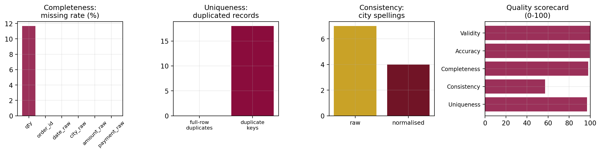
{kind=link}
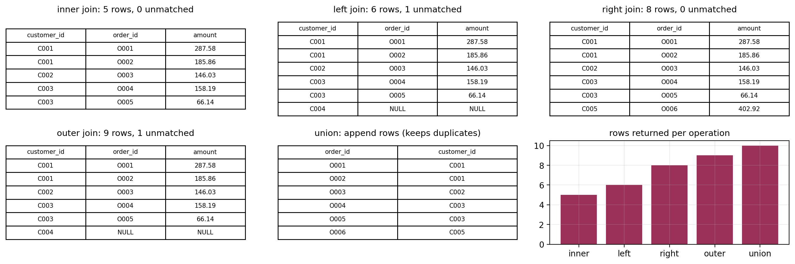
{kind=link}
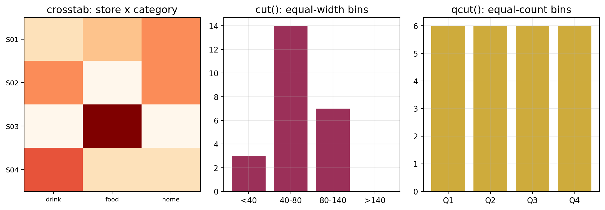
{kind=link}
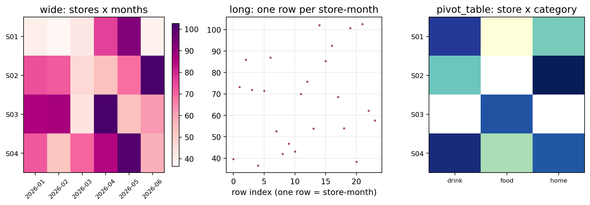
{kind=link}
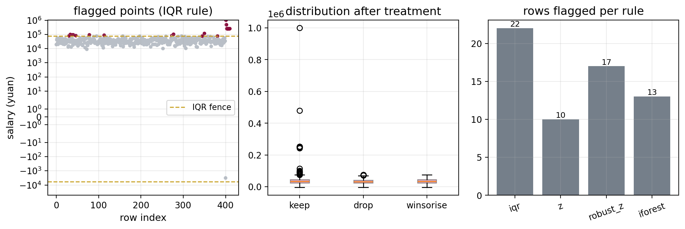
{kind=link}
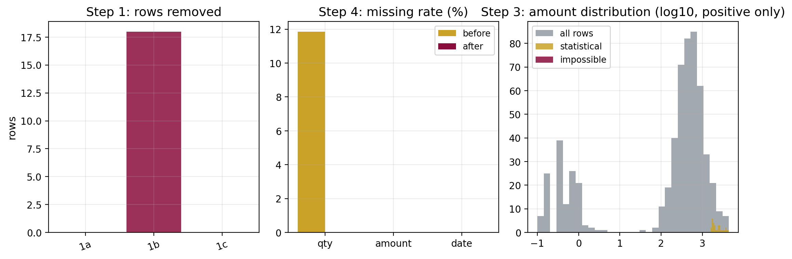
{kind=link}
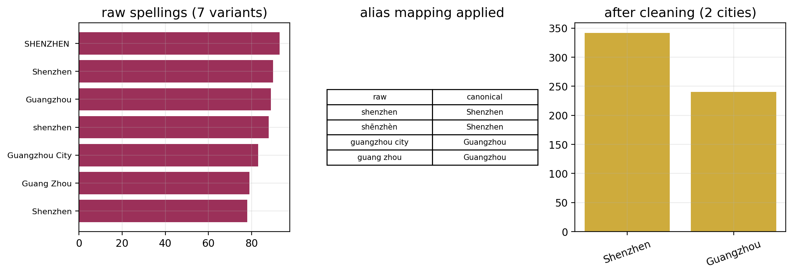
{kind=link}
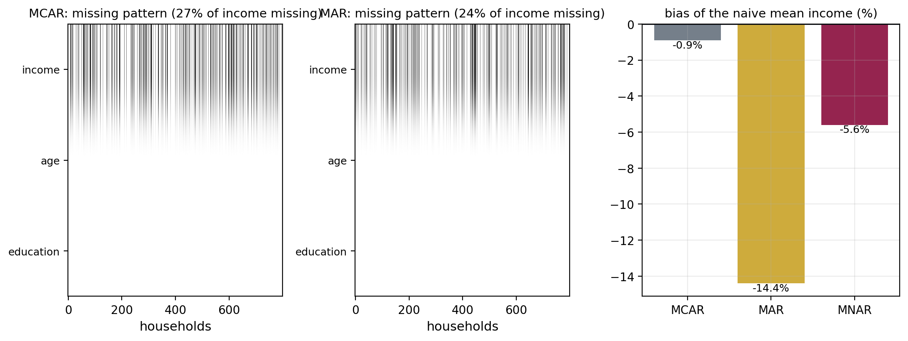
{kind=link}
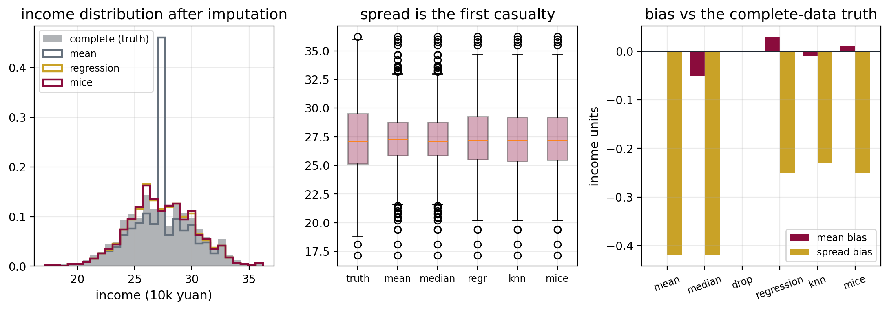
{kind=link}
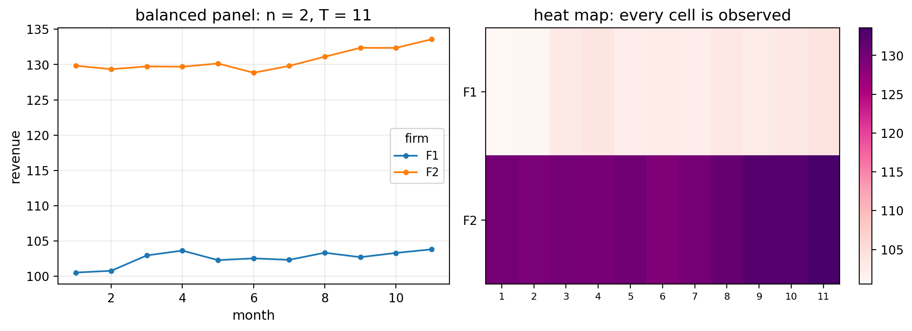
{kind=link}
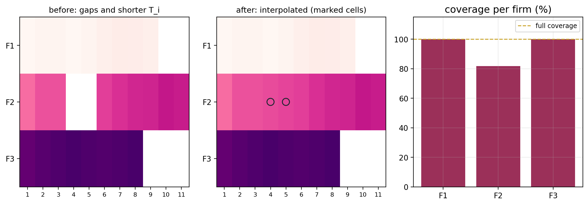
{kind=link}
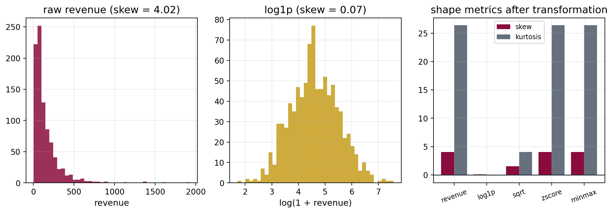
如何运行 How to Run
# 1) 安装依赖（Python 3.8+；本课程用 3.9 实测）
pip install -r code/requirements.txt
pip install -r code/lecture03/requirements.txt
# 2) Lecture 2：数据类型样本（逐行中文注释）
cd code
python run_all.py
# 3) Lecture 3：数据整备样本（逐行中文注释）
cd lecture03
python run_all.py两个讲次的随机种子都固定（L2 为 20260917、L3 为 20260317）， 因此每次运行得到完全相同的样本与图片。
说明 Notes
- 逐行注释：Lecture 2 与 Lecture 3 的程序、以及课件中的代码示例，每一行代码都带中文注释；
- 数据来源：全部样本由程序合成（模拟订单、客户、收入、城市面板、语料、网络等），不包含任何真实个人数据，可自由用于教学与项目 1；
- 与课件对应：L2 图片对应第 10、12、13、15–20、23 帧；L3 图片对应第 15、22、29、30、38、41、46、52、57、62、68、72 帧；
- 拓展建议：把
l3_01_quality_profile.py的数据源换成你自己的表，即可直接得到项目 1 所需的数据质量报告。